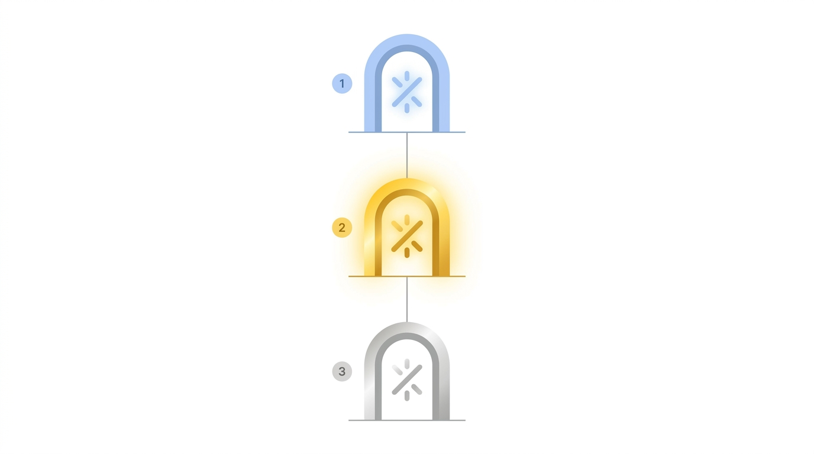

DISPATCH & HITL
3 gates, one operator checkpoint, no autopilot
GATE 1 · HIGH
Artifact draft approval
Operator reviews the primary draft + the supporting artifacts before any downstream generation begins.
GATE 2 · CRITICAL · OPERATOR CHECKPOINT
"Continue the dispatch" - the high-stakes decision
Always surfaces, even with "approve and continue".
This is where the operator decides the next constraint, the next risk, or the next hold.
GATE 3 · HIGH
Final pack approval
All N deliverables are bundled. The pack is written to deliverables/<project>/ and frozen.

"Approve and continue" pre-approves routine gates; Gate 2 always surfaces.